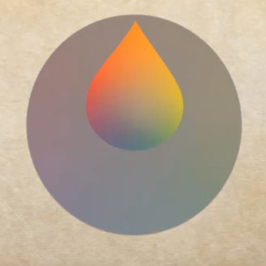
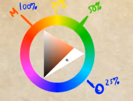
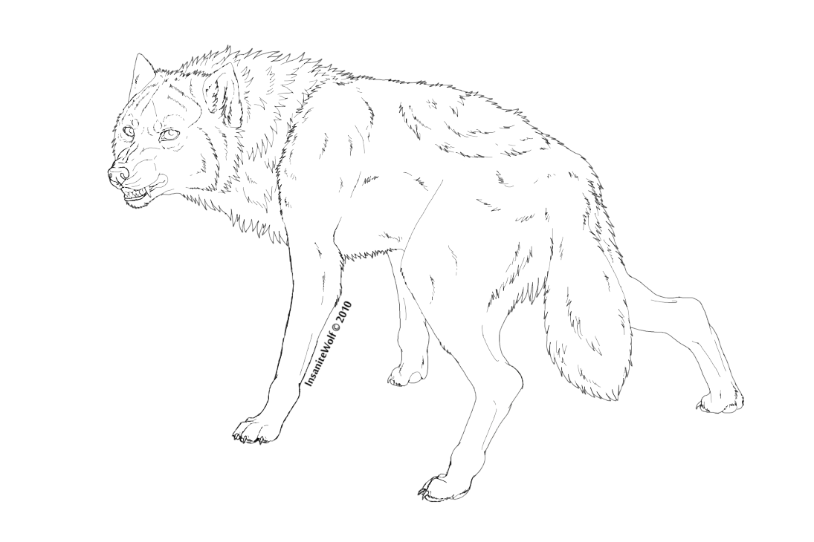

Nice video explaing colors
Little quote: When we are closer of our main color we can use more saturated colors. For example if we are at out main color we can use 100% possible saturations, if we at opposite color we are limited to 25% of "color triangle".
Little quote: When we are closer of our main color we can use more saturated colors. For example if we are at out main color we can use 100% possible saturations, if we at opposite color we are limited to 25% of "color triangle".



Line arts
